The Stripes
The leading side of the pear on the floor of the Pacific, and the place where the Moon was formed
The floor of the North Pacific is crossed by long, straight stripes — Mendocino, Pioneer, Murray, Molokai, Clarion and Clipperton — thousands of kilometres long and parallel to one another. They are seen most clearly on maps of the vertical gravity gradient, which show where the pull of gravity changes sharply over a short distance and so pick out narrow structures in the floor and beneath it. In this series the Moon was built on the tip of a pear of the Earth’s own material, whose base stood on the Pacific near Kiritimati and which was gathered back into the Earth after the Moon was detached (Paper 3, LEF Mechanism in Practice). The pear leaned back against the Earth’s rotation: its tip lagged to the west, its front — the side facing the direction of rotation, the leading side — faced east, and its back, the trailing side, faced west. This paper reads the stripes as the leading side of that pear: the side facing the Earth’s rotation, stretched while the pear was attached and folded into stripes as the pear was gathered back.
The geometry fits this reading in four ways. The stripes are parallels of one equator, and the base of the pear lies on that equator (1.6° from it). “Parallels of one equator” means that every stripe keeps a constant distance from one great circle, as the lines of latitude keep a constant distance from the Earth’s equator — only here the equator is tilted. Lines of this kind are what a single turning motion about a single axis draws, and six of them sharing one equator is a strong geometric constraint on how they were made. The stripes run from the base eastward, toward America. Two bends in the stripes west of the base, one in the north bending down and one in the south bending up, are 3,360 km apart — the width of the 3,000-km contact on which the Moon sat, and of the 3,650-km dome above it; their centre lies about 3,760 km west of the base, on the trailing side, where a pear that tilted back would place its tip. Inside that tip lies the imprint of the Moon’s near side, as a mirror image — the two faces stood facing each other, so that, as with a seal pressed into wax, east and west are exchanged while north stays north — enlarged by 1.37, the contraction of the Moon from the density of the body on the tip to its density today: the same mass packed into a smaller volume makes every distance on its surface shorter by that factor. With Imbrium at 13.2°N 179.0°E, Serenitatis falls on the Marshall chain and the contact centre beside Imbrium, all inside the footprint of the tip.
The stripes pass beneath the volcanic ridges that cross them, unbroken: they were made by folding from the sides and from below, not cut from above. The large ridge chains on either side — the Marshall–Gilbert–Tuvalu chains in the west and the Line Islands in the east — are read as the spatula ridges, lying within the tip of the pear itself, in its peeled part: drawn up from the still-soft material of the contact during the peeling of the Moon, as the contact narrowed from 6,000 to 3,000 km, as it was pulled outward with force — like the ridges plaster leaves when a spatula is pulled off it — and brought down to the floor as the pear was gathered back. The equator of the stripe system is inclined by at least 10° to today’s equator and crosses it near the base: the Earth’s axis may have changed after the separation, which the series leaves for future work.
This draft collects the observations, the measurements and one study made so far (C.5). The studies still to come — the fit of the equator of the stripes, a test of chance for the base on the equator, the continuity of the stripes beneath the ridges, and a comparison of the spatula ridges with ridges built from below elsewhere in the world — are set out in Part G.
The claim. The stripes of the North Pacific are the leading side of the pear on which the Moon was built: stretched in the direction of the Earth’s rotation while the pear stood, folded into stripes as it was gathered back into the Earth. The pear’s tip — the place where the Moon was formed — lies west of the base, on the trailing side, and left its outline in two bends of the stripes, the mirror imprint of the near side, and two chains of ridges drawn up in the contact region during the peeling of the Moon, as it was pulled outward with force. In short, the floor of the North Pacific is read as the place where the pear stood and was gathered back, and the stripes as the record of its return.
The numbers. The stripes lie from 33.6° north of the equator of the stripe system (Mendocino) to 1.8° (Clipperton). Base of the pear (Kiritimati, 1.9°N 157.5°W) 1.6° from the equator of the system, which is inclined by at least 10° to today’s equator (up to about 20°; the positions in this paper use a fit of 11°, crossing at 159°W). The bends: 23.8°N 164.9°E and 5.3°S 173.2°E, 3,360 km apart (3,040–3,700); centre 9.3°N 169.3°E, about 3,760 km west of the base. The near side on the Earth, as a mirror image at 1.37: Imbrium 13.19°N 179.04°E, Serenitatis 11.5°N 166.3°E, contact centre 8.2°N 179.3°W. Ridge chains 2,800–3,500 km apart. Length of the pear’s own body, with its tip region, at release 8,890–9,000 km; with the Moon as its tip the pear reached the corotation line (10,570–10,690 km); the stripe system 9,360 km (C.4). Traced on the GEBCO 2026 grid, the stripes of the north, the centre and the south of the Pacific lead to the tip: all ten traced paths reach the tip region, and six pass within 1,500 km of the centre of the final contact (166–1,274 km), against none of three reference stripes (C.5). Read together: the bends and the ridge chains both measure a width of about three thousand kilometres, the width of the contact on which the Moon sat, and the base and the southern edge of the tip lie on the equator of the stripes.
What it requires. (1) A pear with its base on the Pacific near Kiritimati and its tip lagging west (Paper 3). (2) A leading side that was stretched and then folded, with no cut from above. (3) A Moon whose surface was larger by about 1.37 when it sat on the tip (density 1,300 against 3,344 kg m). (4) A contact region on the tip whose material was still soft while the Moon was peeled away and pulled outward with force, so that it was drawn into ridges; the ridges came down to the Pacific floor with the tip region as the pear was gathered back. (5) A floor that gathered new layers on top while the layers beneath were renewed: the dated surface is the last layer, and the stripes are an older fold beneath it (Part F).
Tests. The requirements of the model, and what would test it, are collected in Paper 11 (The Requirements).
Maps. Vertical gravity gradient (VGG) and topography of the ocean floor, Scripps / EarthByte, viewed on a three-dimensional globe (Cesium); the images are the author’s. Topography shows the height of the floor. The VGG shows how quickly the pull of gravity changes as one moves up or down: it is strong where denser and lighter material meet over a short distance, and it plays down broad, deep differences. A narrow fold, ridge or trough — at the surface or buried beneath younger material — therefore appears on it as a sharp line (Part F). Positions are read on the globe after fitting its perspective to the limb of the disc and to known points (Hawaii, the Hawaiian–Emperor bend, the northern end of the Tonga trench, Meiji seamount; residuals below 5 pixels): places whose coordinates are known were used to calibrate the view, and after the fit each of them falls within 5 pixels of where the globe shows it. The equator of the stripes. Fitted on the author’s points: inclined at least 10° to today’s equator, up to about 20° (E.2); the positions in this paper are given for a fit of 11°, crossing today’s equator at 159°W, within that range; the exact value is Study 1. The pear (Paper 3): base 9,000–11,000 km wide near Kiritimati, above the Pacific low-velocity province — a region of continental size at the bottom of the mantle, just above the Earth’s core, through which seismic waves travel more slowly than through the mantle around it; contact with the Moon 3,000 km at release, 6,000 km earlier; dome 3,650 km. The Moon: density of the body on the tip 1,300 kg m; at release 2,600 (radius 1,890 km); today 3,344 (radius 1,737 km). On the tip the body was light and full of gas from its volatiles; it grew denser while still attached, and at release it was round, with a rigid outer shell (Paper 2, §B.7). All positions on the Earth are today’s.
Introduction — the stripes
This Part introduces the object of the paper — a set of straight lines on the floor of the North Pacific — and the reading the series gives them. Section A.1 describes what is seen on the maps and measures where each stripe lies; Section A.2 recalls the pear of Paper 3 and states how the stripes are read as its leading side. The observations that support the reading follow in Part B.
A.1What is seen
Across the floor of the North Pacific run long straight lines. They are best seen on maps of the gravity gradient, where they stand out as sharp, narrow lanes, many of them doubled or tripled — a single stripe appears as two or three close lanes side by side (Figure A.1). The gravity-gradient map is used because it responds to sharp contrasts of density over short distances: where a fold brings denser material beside lighter material along a narrow band, the map draws a line, whether the band lies at the surface or beneath younger layers. On the topography of the same floor the stripes are faint (Part F). They run from the coast of North America westward for thousands of kilometres — Clipperton alone for some 7,240 km, more than the radius of the Earth — and they are nearly parallel. All six are parallels of one equator, inclined by at least 10° to today’s equator (Part E).
What “parallels of one equator” means is best seen on a globe. Any great circle — a circle that divides the sphere into two equal halves — can serve as an equator. The circles that keep a constant distance from it, to the north or to the south, are its parallels, as the lines of latitude are the parallels of today’s equator. If that equator is tilted against today’s, its parallels run obliquely across today’s map, but they still never meet one another. A set of long lines on a sphere need not behave this way: straight lines drawn independently would in general be parts of different great circles, and any two great circles cross. Six stripes that are all parallels of the same equator, spread over more than 30° from north to south, say something definite: every point of a body turning about an axis moves along a parallel of the equator of that axis, so lines of this kind are what one motion about one axis leaves behind. This is why the equator of the stripes is measured with care in this paper (Part E), and why it matters that the base of the pear lies on it (Part B).
The figure gives the whole scene at once. The red arrows mark the parallel stripes running toward America; the black arrows mark the two places, west of the base, where the outermost stripes leave their parallels and turn toward each other; the orange arrows mark the two points whose separation gives the width of the tip in Part C.
The table lists where each stripe lies. The middle column gives its distance, in degrees, north of the equator of the stripe system; the right column gives its distance north of the parallel on which the base of the pear lies, which is the middle column less the 1.6° of the base.
| Stripe | From the equator of the system | Distance from the base |
|---|---|---|
| Mendocino | 33.6° N | 32.0° north |
| Pioneer | 30.1° N | 28.5° |
| Murray | 25.9° N | 24.3° |
| Molokai | 20.4° N | 18.8° |
| Clarion | 10.5° N | 8.9° |
| Clipperton | 1.8° N | 0.2° |
| Base of the pear (Kiritimati) | 1.6° | — |
Measured from anchor points on each stripe (Cape Mendocino, the Channel Islands, Molokai, Clarion and Clipperton islands); the western end of Clipperton gives 0.8°.
Two things stand out in the table. The stripes are spread from the base northward over more than thirty degrees, and the southernmost of them, Clipperton, passes within a fraction of a degree of the base: the base lies on the equator of the whole system, beside the southernmost of these six stripes; two more stripes lie south of it (B.4), so the base lies inside the system, not at its edge. Measured at a different point — the western end of Clipperton — the reading changes by about a degree, which gives a sense of the precision of a reading at a single anchor point at this stage; the full refit is Study 1 (Part G).
A.2The reading of the series
The question this section answers is how a set of lines on the floor of the Pacific is connected with the origin of the Moon. The connection is the pear of Paper 3, recalled here in brief.
In this series the Moon was built from the Earth’s own material, on the tip of a pear that rose from the Earth while it spun fast and that was gathered back into the Earth after the Moon was detached (Paper 3). The pear was one bulge of the young Earth, drawn out by the pressure inside it into a long extension of the Earth’s own material: broad at its base on the Earth’s surface and narrowing in one smooth curve to its tip, which carried the body that became the Moon. The Moon sat on the tip over a wide contact, 6,000 km across at first and 3,000 km at release, and its upper dome rose some 3,650 km above it. The pear was part of the Earth and was held by the Earth’s gravity, like any other part of it; it was not thrown off, because its speed was not a throwing speed and it lay inside the corotation radius — the distance — about 16,400 km from the Earth’s centre on the equator of that time — at which anything turning once a day with the Earth already moves at the speed of a free orbit. When the Moon’s centre reached that distance, the Moon began to separate; it peeled away with little resistance and was released about 210 km beyond the line, when a little more than half of it had crossed, pulled outward with force. We propose that detaching the Moon exposed the openings of the pear — the cork came out — and the pressure inside it was released; with nothing left to lengthen it, the pear was gathered back into the Earth by the sorting over tens to hundreds of millions of years.
The base of the pear stood on the Pacific near Kiritimati (Christmas Island, in the Line Islands), above the Pacific low-velocity province of the deep mantle (Paper 3, §E.4). A low-velocity province is a region at the base of the mantle in which seismic waves travel more slowly than in the surrounding mantle, which shows that its material differs in temperature or composition; there are two of continental size, one beneath Africa and one beneath the Pacific. We propose that the Pacific one is in part where the heavy material of the pear came to rest as the pear was gathered back — with a light reservation, since the nature of the deep provinces is still open: the Pacific one may in part be core-related material that did not finish sorting.
The whole pear tilted back: its tip, and the Moon on it, lagged behind the rotation of the Earth. The everyday picture is a child walking outward on a turning roundabout: the farther out she goes, the faster she must move to keep up with the roundabout, and she feels herself pushed backward against the direction of the turn. Material carried outward along the pear lagged in the same way, so the tip came to stand behind the base — to the west of it, since the Earth turns toward the east. This gives the pear two sides. Its front, the side facing the rotation — the leading side, on the east — was stretched. Its back, the side facing away from the rotation — the trailing side, on the west — lay beneath the leaning tip.
As the pear was gathered back, it was absorbed into the Earth; its heavy part went down to the base of the mantle beneath the base of the pear, and the absorption left wrinkles on the floor — the stripes on the leading side, the crumpled arcs of the western Pacific on the back (B.8, E.3). The mass did not leave the Earth; it moved from high outside to deep inside. In this return its leading wall was smeared along the floor in the direction of the rotation: the far end of the wall lagged most and its middle less, so the wall folded back on itself, and it was laid down as the stripes. This paper reads the North-Pacific stripes as that wall.
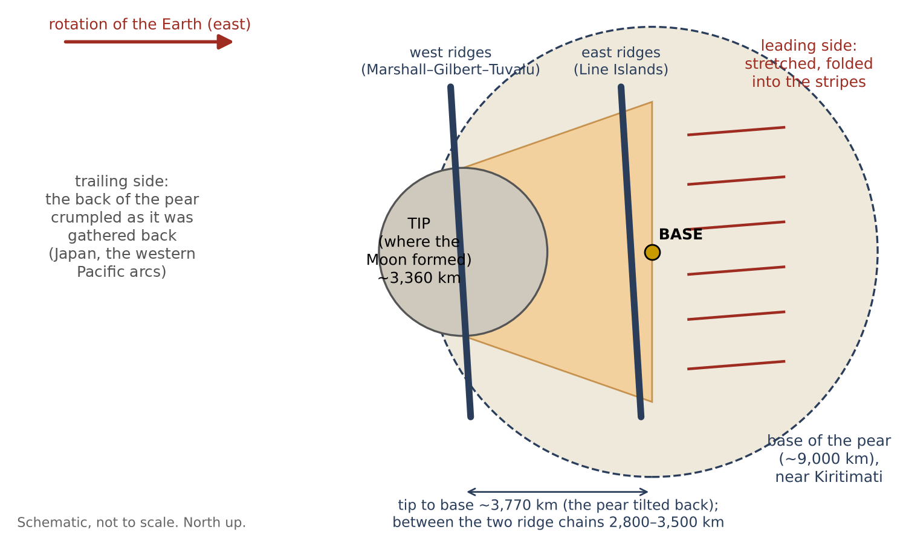
Figure A.2 sets out the map that the rest of the paper fills in: the base in the middle, the tip to its west, the folded leading side to its east, and the ridge chains on either side of the place of the tip.
If this reading is right, the floor should keep more than the stripes. Where the tip came down, it should show the outline of the tip, about as wide as the contact; and inside that outline it may keep the imprint of the face of the Moon that rested on the tip — the near side, the side that still faces the Earth. Two faces pressed together leave mirror images of each other, as a seal leaves a reversed print in wax: seen from the Earth, east on the Moon’s near side falls on west on the floor beneath it, while north stays north. And because the Moon was then far less dense than today, the imprint should be larger than the near side is today, by the factor 1.37 by which the Moon’s lengths have shrunk since (Part C).
The paper proceeds as follows. Part B sets out the observations: the shared equator, the base on it, the stripes running east, the stripes passing beneath the ridges, the deep mantle beneath the base and the crumpled trailing side. Part C finds the tip from the two bends, tests the mirror imprint of the near side, and follows the stripes of the whole Pacific to the tip in the data (C.5). Part D reads the ridge chains within the tip as ridges drawn up in its peeled part during the peeling of the Moon, as it was pulled outward with force. Part E measures the tilt of the equator of the stripes against today’s. Part F takes up the challenges, first among them the young age of the sea floor; Part G lists the studies that will test the reading, and Part H concludes.
The observations
Part A set out the reading of this paper: the long straight stripes of the North Pacific are the leading wall of the pear on which the Moon was built, laid down on the floor as the pear was gathered back into the Earth after the release. This part goes through what is seen on the map, one observation at a time. Each section has the same two steps. Under Observed we state only what the map shows, in the terms of the map. Under The model we say why the reading of this series expects exactly that. The reader can therefore judge each observation on its own before judging the reading built on it.
B.1 The stripes are parallels of one equator
Observed. Six stripes parallel to one equator, from 33.6° north of it to 1.8° (A.1), with two more south of it (B.4) — a belt about one equator. In plain terms: if a globe is tilted until one particular great circle becomes its equator, each stripe then follows a line of constant latitude on that tilted globe, as the parallels on an ordinary map follow lines of constant latitude. The six stripes sit at different distances from that equator, but none of them crosses another, and together they form a band on both sides of it.
The model. The direction of the stretching of the leading side: the stripes are parallel to the motion of the pear’s front relative to the floor, and their equator is the equator of the rotation that stretched them — the Earth’s equator of that time (Part E). The reason is simple. Every point of a spinning body moves along a parallel of its equator. A wall standing on the Earth and carried by its rotation was pulled along these parallels, and when it was laid down, the marks it left run along them too. A set of lines that all share one equator is what a rotation leaves; lines made by unrelated local causes would have no reason to share one.
B.2 The base of the pear lies on the equator of the stripe system
Observed. Kiritimati, the base of the pear in Paper 3, lies on the equator of the stripes (1.6° from it), next to Clipperton (1.8°). The place of the base was set in Paper 3, from the deep mantle beneath it, before the stripes were considered; the equator of the stripes was fitted to the stripes alone. That the two meet is therefore a finding, not a choice. How often a point chosen at random would fall this close to the equator of the system is the subject of Study 2 (Part G).
The model. The pear rose from the equator of that time; its base is where the stretching was centred, and the stripes are arranged about it. A body that rises from a spinning planet and is drawn outward by the rotation rises most readily where the outward pull of the rotation is greatest, which is at the equator. If the stripes record the equator of that time (B.1), the base of the pear should lie on that same line, and it does.
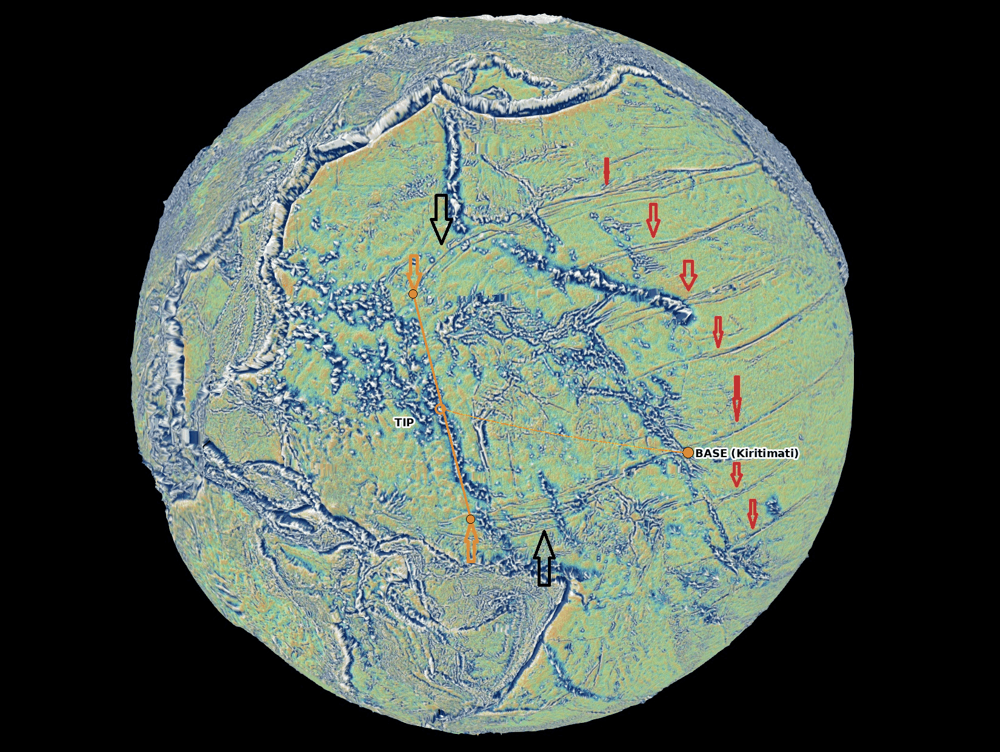
B.3The stripes run east of the base
Observed. The stripes run from the base region eastward to America; west of the base they bend and converge (B.6). They are one-sided: they begin near the base and do not continue as straight parallels on its western side.
The model. East is the direction of the Earth’s rotation: the leading side. The Earth turns from west to east, so the side of the pear facing east was the side pushing ahead into the rotation, and the side facing west was its back. The trailing side to the west was laid down differently — toward the arcs of the western Pacific and Japan, on the back of the pear (B.8). A wall that was stretched in the direction of rotation should leave its stripes on the eastern side of the base only, and a different kind of mark on the western side. Study 3 (Part G) checks what lies west of the base.
B.4Stripes on both sides of the base
Observed. The stripes from Mendocino to Clipperton lie north of the base; two more lie south of it, about 6° and 14° south of the equator of the system (to be identified; probably the stripes known as Galapagos and Marquesas). The names are used here only as names of places on the map.
The model. The front was stretched on both sides of the base; the base lies inside the system, not at its edge. The front of the pear was a wide wall — its base was 9,000–11,000 km wide — and the whole width of that wall faced the rotation. Stripes are therefore expected to the north and to the south of the base, with the base among them rather than at one end. The northern stripes are better seen and better measured; the two southern ones are still to be traced in full (Study 1).
B.5The stripes pass beneath the ridges
Observed. Where volcanic ridges cross the stripes — near 36°N 178°W, in the Line Islands near 6°N 159°W, near the Phoenix Islands at 2°S 175°W and near 13°S 152°W — the stripe continues beneath the ridge, and the ridge is not cut (Figure B.2). At four separate crossings, in different parts of the system, the stripe meets a ridge, disappears under it and reappears on the other side, while the ridge above it stands whole.
The model. The stripes were made by folding from the sides and from below, not by gouging from above: a groove cut from above would cut the ridge too (Figure B.3). The difference between the two is easy to picture. Draw a knife across a tablecloth on which a book is lying: the knife meets the book first, and either cuts it or is stopped by it — the line on the cloth is interrupted where the book stands. Now push the tablecloth from its two edges so that it rucks up into a fold: the fold forms in the cloth itself, beneath the book, and the book rides on it whole. A stripe that was cut from above, by something dragged over the floor, would have to cut every ridge in its path, or end against it. A stripe that was made by folding the floor itself, from the sides and from below, passes beneath the ridge and leaves it whole. The four crossings show the second.
The observation does not fix the order: the ridges may already have stood on the stretched surface while the folding formed beneath them. The test is whether the ridges themselves are shortened where a stripe passes beneath them (Part G). A fold that formed beneath a standing ridge would have squeezed the ground on which that ridge stood, and the ridge should show it, as the book on the rucked tablecloth comes to lie on a narrower strip of cloth. This is Study 6, and the question is also collected in F.2.
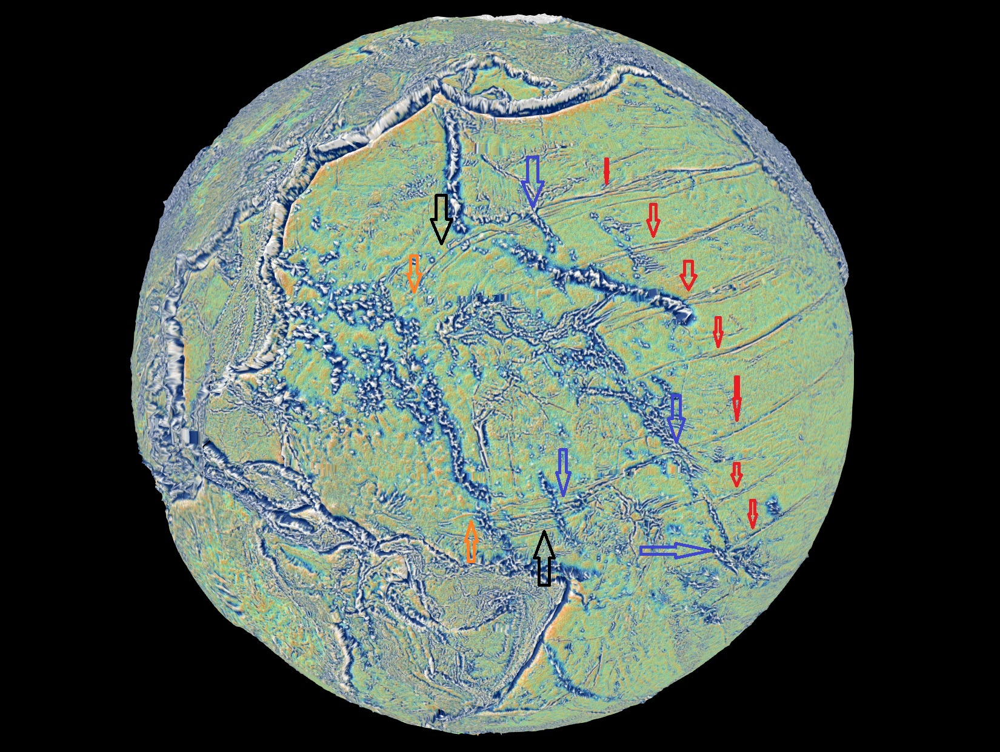
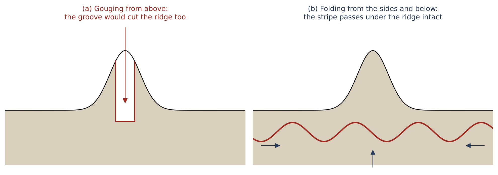
B.6 Continuity and bending at the ridges — first reading
Observed. On close views of two crossings (Figures B.4–B.5) each stripe reaches the ridge and continues on the other side from the same point, with no lateral jump that can be seen at this resolution; but its direction changes at the ridge. West of the ridges the northern stripe turns down (about 14° in the image, and in an arc farther north) and the southern stripe turns up (about 8). The stripes converge westward — toward the tip (Part C). Parallels of one equator do not converge: west of the ridges the stripes leave that geometry. In other words, east of the ridges the stripes behave as lines of latitude about one equator (B.1); west of them, the outer stripes turn toward each other, the northern one southward and the southern one northward, as if drawn toward a common region between them.
The model. The convergence points to the region where the tip of the pear came down (Part C). The stripes are the trace of the leading wall; where the tip lay, the wall was gathered around it, and the stripes turn toward it. Traced in the data across the whole Pacific, the stripes of the north, the centre and the south lead to the same tip (C.5).
Status. A first reading on oblique views with vertical exaggeration (30 and 200); to be measured on a flat map without exaggeration (Part G). These views look at the globe at a slant, as from an aircraft window, and multiply all heights — by 30 in one view and by 200 in another — so that low relief on the floor can be seen at all. Both steps help the eye find a stripe, and both distort the angles one reads from the image: on a slanted view a straight line on the curved globe can appear bent, and on an exaggerated surface the side of a ridge can make a line seem to turn where it only climbs. The angles of 14° and 8° are therefore angles in the image, not on the Earth. To measure the true direction of each stripe on both sides of a ridge, the same places must be read on a flat map seen from straight above, with heights at their true scale, using the coordinates of the cursor rather than the eye (Study 6).
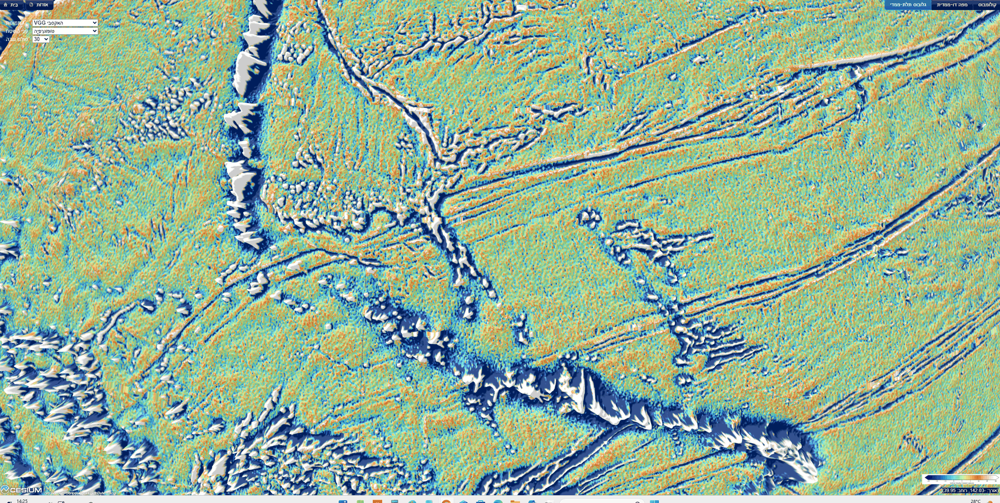
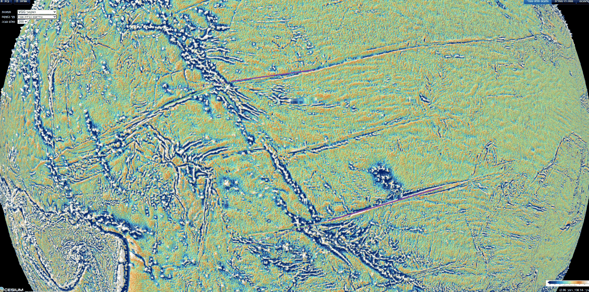
B.7The deep mantle beneath the base
Observed. Beneath the base the lowermost mantle is slow in all five models of the vote maps (Cottaar & Lekic 2016), inside the contour of two others; the centre of the Pacific low-velocity province lies 1,480–1,660 km to the south-south-west (Paper 3, §E.4).
Some words on these terms. Seismic waves from earthquakes cross the whole Earth, and from their travel times one builds a map of the speed of the waves at each depth, a “tomographic model”. Where the waves travel more slowly than the average for that depth, the material is hotter, or of a different composition — denser and richer in iron, for example — than its surroundings. Above the core, beneath the Pacific and beneath Africa, lie two large regions of slow material, the large low-velocity provinces. Different research groups build different tomographic models, and their maps do not agree in every detail. The “vote maps” of Cottaar & Lekic (2016) deal with this by counting: for each place at the base of the mantle they ask how many of five models call it slow. A place with all five votes is slow in every model. The contour is another, stricter way to draw the same regions: it is the line inside which the waves are slower than the average at that depth by at least one per cent. Beneath Kiritimati the votes are unanimous, and two further models also place it inside their contours. The base of the pear thus stands on the Pacific slow region, a little to the north-north-east of its centre.
The model. After the release the pear was gathered back into the Earth whole and absorbed into it (E.3); its heavy, iron-rich part went down to the bottom of the mantle, beneath the place where the pear had stood. We propose, with a light reservation, since the nature of the deep provinces is still open, that a dense, iron-rich pile there is part of the Pacific low-velocity province (Paper 3, §E.4). The stripes on the floor and the slow region at the base of the mantle are then two traces of the same event: one at the top, where the wall was laid down, one at the bottom, where the heavy material came to rest.
B.8The trailing side — the back of the pear
Observed. West of the tip, between the western Pacific and the Indian Ocean, the floor and its margins are crumpled and peeled in every direction: the Philippine and Mariana arcs, the arcs of Indonesia, the hooked Banda arc north of Australia (Figure B.6). East of the base the marks are parallel and straight (B.1); west of the tip they are curved, crowded and turned in many directions.
The model. This is the back of the pear: the side that faced away from the rotation, which crumpled in no order as the pear was gathered back, whereas its leading wall was laid down in parallel stripes. The difference between the two sides follows from what each side went through while the pear stood. The leading wall had been stretched for a long time in one direction, the direction of the Earth’s rotation; it carried that one direction into its return, and so it was laid down in lines that all share it. The back had no such single pull. As the pear was gathered back and absorbed, the back came down without a direction of its own, and it crumpled as a rug crumples when it is dropped in a heap rather than drawn out flat.
Measured from the base (Kiritimati), the arcs lie where the length of the pear reaches: the Banda arc 8,100 km, the Philippines and Sulawesi 9,040–9,070 km, Java 10,300 km — against a pear whose own body, with its tip region, was 8,890–9,000 km long at release (C.4). The back stood beneath the leaning tip, on the west. The pear was gathered back slowly; its masses were absorbed into the Earth and left wrinkles, and on the back these wrinkles are the crumpled arcs. A back laid down in this way should leave its trace out to about one pear-length west of the base. The image of a felled tree, which lies across a length of ground equal to its height, shows only this match of lengths: the pear was not toppled, it was gathered back. The arcs lie at 8,100 to 10,300 km, on both sides of that length.
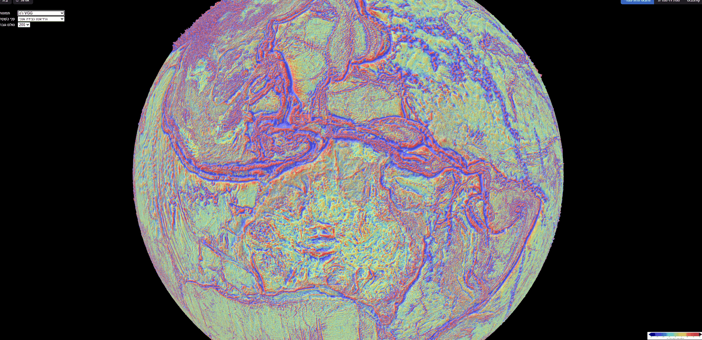
What we now have. The stripes form one belt about one equator (B.1); the base of the pear lies on that equator (B.2); the stripes lie east of the base, on the side facing the rotation, and on both sides of it to north and south (B.3–B.4); they pass beneath the ridges, as folds do and grooves do not (B.5); west of the ridges they turn toward each other (B.6); the deep mantle beneath the base is slow (B.7); and the back of the pear, to the west, is crumpled at about one pear-length from the base (B.8). The next part follows the stripes to the place where they converge.
The pear tip — the place where the Moon was formed
Part B ended where the stripes turn toward each other, west of the ridges. This part asks what lies in the region they turn toward. In this series the Moon was built on the tip of the pear, and the tip lagged behind the rotation, to the west of the base (Paper 3). As the pear was gathered back into the Earth, the tip came down to the west of the base. The region where the stripes converge should therefore be the place where the tip came down: it should be as wide as the tip, it should lie west of the base, and, if the face of the tip kept any mark of the Moon that sat on it, that mark should be found inside it. The sections below take these three in turn (C.1–C.3); C.4 compares the length of the whole stripe system with the length of the pear, and C.5 follows the stripes of the whole Pacific — north, centre and south — in the data, to the same tip.
C.1The two bends
West of the base the northern stripe bends down and the southern stripe bends up (Figure A.1, black arrows). Between the bends (orange arrows) the distance is
| Value | |
|---|---|
| Northern bend | 23.8°N 164.9°E |
| Southern bend | 5.3°S 173.2°E |
| Distance | 3,360 km (30.2°) |
| Range (each point moved by 15 pixels) | 3,040–3,700 km |
| Centre | 9.3°N 169.3°E |
The table gives the two places where the outer stripes leave their straight course, the distance between them along the Earth’s surface, and the point half-way between them, which we take as the centre of the tip. The range in the fourth row shows how much the distance depends on where exactly the bends are marked: each bend was moved by 15 pixels on the image in each direction, and the distance stayed between 3,040 and 3,700 km.
Why compare this distance with the contact and the dome? If the stripes turn because they were gathered around the tip when it came down, the two bends mark the two edges of the tip, and the distance between them is the width of the tip. That width is known independently, from Paper 3: the Moon sat on a contact 3,000 km wide at release, and the dome on which it sat was 3,650 km wide. The width matches the contact on which the Moon sat at release, 3,000 km, and the dome above it, 3,650 km (Paper 3). The measured 3,360 km lies between the two, and its range, 3,040 to 3,700 km, spans both.
The northern bend lies on the parallel of Pioneer (30.0° north of the equator of the stripe system, against 30.1°); the southern bend on the equator of the system itself (0.1° from it), as the base (1.6°). The bends are thus not placed at random among the stripes: each falls on a line of the system itself, one on a stripe and one on the equator on which the base also lies.
C.2The tip lies west of the base
The centre of the tip lies about 3,760 km west of the base (3,770 km in an earlier version): on the trailing side. The pear tilted back — the tip and the Moon on it lagged behind the Earth’s rotation — and as it was gathered back, the tip came down to the west of the base. The tip stood far above the surface and had to be carried around on a much larger circle than the base; in the series it lagged behind the base, so that the pear leaned backward, against the rotation (Paper 3). As the pear was gathered back into the Earth, the tip came down where it leaned, on the western side. The base lies on the equator of the stripe system (1.6° from it), and so does the southern edge of the tip (the southern bend, 0.1° from it); the centre of the tip lies about 15° north of that equator (14.9° for the fit of 11°; 14.4° at 10° and 16.4° at 14°), between the southern bend on the equator and the northern bend on the parallel of Pioneer. This is not the release latitude of 22.5° of Papers 3–4: that is the direction of the Moon’s centre seen from the Earth’s centre at release, whereas the footprint is where the tip came down as the pear was gathered back, in the frame of the stripes — two different quantities; the axes are future work.
C.3The maria on the Earth — a mirror image
The question of this section is whether the face of the tip kept a mark of the Moon that sat on it. In Paper 3 the near side of the Moon — the side that faces the Earth — was the side in contact with the tip, and its maria are openings through which the Earth’s pressure and heat passed from the pear into the Moon (Imbrium the main passage, Serenitatis the secondary). If the floor of the Pacific holds a trace of that contact, it should hold the pattern of the near-side maria, in the right arrangement and at the right size. The arrangement is a mirror image, and the size is larger than the Moon today. We take these two points first.
Why a mirror. The Moon and the tip of the pear stood face to face. Between two bodies facing each other, east on the near side of the Moon falls on west on the Earth: an imprint of the contact must be a mirror image of the near side — north kept, east and west exchanged. A rubber stamp shows why. The letters on a stamp are cut in reverse so that the print on the paper reads the right way: the stamp and the paper face each other, and the print is the mirror of the stamp. In the same way, press a hand flat on a window and look at it from outside: the thumb that was on the right as you looked at your own palm is now on the left. North and south are not exchanged, because the Moon and the Earth turned about the same axis and shared the same “up”; only east and west are exchanged.
The first reading. On the gravity-gradient map the author first marked three circular features as Imbrium, Serenitatis and Nectaris (Figure C.1). Their distance Imbrium–Serenitatis, 1,420 km, matched the lunar distance enlarged by the contraction (below), but the three formed a direct image, not a mirror; Nectaris then fell 574 km from its place in a direct copy and 2,500 km from its place in a mirror. A direct imprint cannot come from two faces in contact, and the reading was replaced. We keep this step in the paper because it is part of the investigation: the first marks were made by eye, before the geometry of the contact was worked out, and it was the requirement of a mirror that showed they could not all be right. The reading that replaced it (below) keeps the one mark the author is most confident of, Imbrium, and lets the mirror predict where the others must lie.
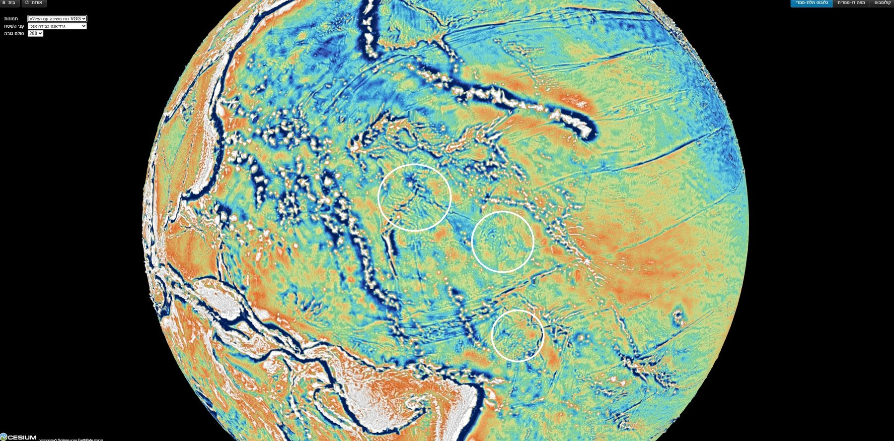
The scale. The Moon has contracted since it sat on the tip. With the same mass, from the density of the body on the tip (1,300 kg m) to its density today (3,344), every length on its surface shrank by (through the stages of the series, 0.83 from lens to ball and then 1,890 1,737 km: 1.31). Imbrium–Serenitatis, 1,023 km on the Moon today, was about 1,400 km on the tip.
The reasoning is short. The mass of the Moon did not change; its density rose, from that of the puffed body on the tip to that of the Moon today. With the same mass, the volume falls in proportion to the rise in density, and the radius — and with it every distance between two points on the surface — falls as the cube root of that ratio: where kg m is the density of the body on the tip and kg m the density of the Moon today. A balloon that is let down to a smaller size shows the same thing: two dots drawn on it come closer together in the same proportion as its radius. The second route in the parentheses follows the same body through the stages of the series. First, while still attached to the tip, the flattened, lens-shaped Moon rounded into a ball; this rounding happened before the release, and it changes surface lengths by the factor 0.83. Then, from the release onward, the round Moon contracted from a radius of 1,890 km to 1,737 km. Together the two stages give 1.31. The two routes agree to within a few per cent; we use 1.37. The distance between Imbrium and Serenitatis, 1,023 km today, is thus about 1,400 km at the size the Moon had on the tip, and it is at this size that the near side should be found on the Earth.
The imprint of the near side on the Earth is a mirror image (north kept, east and west exchanged), enlarged by against the Moon today.
The mirror image. Keeping Imbrium where the author marked it (13.19°N 179.04°E) and carrying the near side to the Earth at the scale 1.37 as a mirror image, Serenitatis falls on the Marshall chain, Nectaris among the arcs north-east of Australia, and the contact centre beside Imbrium (Figure C.2). One point must be fixed to place the image, since the rule of the mirror and the scale fix only the shape and the size of the pattern, not where on the floor it lies. We fixed Imbrium, the main passage, and let the rule of the mirror decide where every other feature must fall.
Keeping Serenitatis instead places Imbrium north of Kiritimati, in a quiet field crossed by stripes; of the two mirror placements the author judges the first to show the circular features on the map. Both placements obey the same rule; they differ only in which of the two first marks is kept. The figure shows both, so that the reader can compare them.
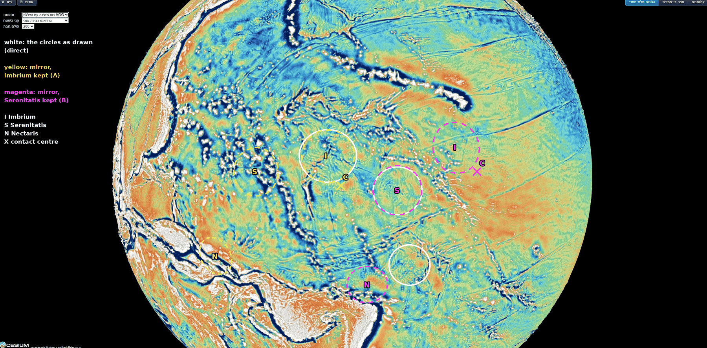
| On the Moon | On the Earth | From tip centre | From base | |
|---|---|---|---|---|
| Imbrium | 37.6°N 340.0°E | 13.19°N 179.04°E | 1,150 km | 2,870 km |
| Serenitatis | 27.3°N 18.4°E | 11.5°N 166.3°E | 410 km | 4,140 km |
| Contact centre | 24.1°N 335.2°E | 8.2°N 179.3°W | 1,260 km | 2,510 km |
| Nectaris | 15.2°S 35.0°E | 3.1°S 156.6°E | 1,970 km | 5,130 km |
On the Earth: mirror image at 1.37. Imbrium is the author’s mark; the others are the places predicted by the mirror. Tip footprint: radius about 1,680 km.
How to read the table. Each row is one feature of the near side. The first column gives its place on the Moon today; the second, its place on the Earth — for Imbrium the author’s mark, for the others the place the mirror rule predicts. The last two columns give the distance of that place on the Earth from the centre of the tip (C.1) and from the base of the pear. The test is in the third column: a feature that was in contact with the tip should lie within the tip’s footprint, that is, within about 1,680 km of its centre — half the width between the two bends, 3,360 km.
Imbrium, Serenitatis and the contact centre all fall inside the footprint of the tip; Nectaris, far to the south on the Moon, falls just outside it. Serenitatis, the secondary passage, falls 410 km from the centre of the tip; Imbrium, the main passage, 1,150 km; the contact centre 1,260 km. Nectaris lies far to the south of the contact on the Moon as well, and at 1,970 km it falls just beyond the footprint, as its place on the Moon would lead one to expect.
What is measured here is the agreement of the predicted places with features the eye picks out; the features at the mirrored places are still to be marked and measured on the map (Part G). This is Study 8: to mark the features at the mirrored places of Serenitatis, Nectaris and the contact centre, and of the other near-side maria at the scale 1.37, and to see whether a circular feature stands at each.
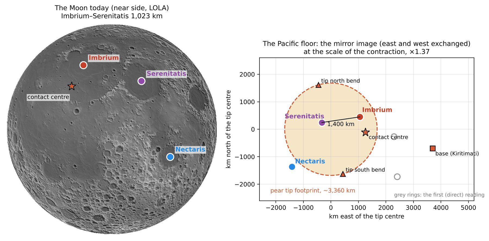
C.4 The length of the stripes is the length of the pear
The stripes are the leading wall of the pear. The pear was gathered back slowly, and as it was, its leading wall was smeared along the floor in the direction of the rotation: the far end of the wall lagged most, the middle less, and the wall folded back on itself; its masses were absorbed into the Earth and left wrinkles — the stripes. A wall laid down in this way should cover the floor over about the length it once had. The picture of a felled tree, which lies across a length of ground equal to its height, illustrates only this match of lengths; the wall was not toppled but smeared as the pear was gathered back.
The length of the pear is set by the corotation line. A body that turns once with each Earth day moves faster the farther it is from the Earth’s centre; a body in a free orbit around the Earth moves slower the farther it is. At one distance the two speeds are equal: there, a body carried around with the Earth already has the speed of a free orbit and no longer needs to be held. That distance is the corotation line. In the series the pear lengthened until the Moon’s centre reached this line; there the Moon began to separate, and it was released about 210 km beyond the line (Papers 2–4). At release the Earth’s day was 5.77 h. On the equator of that time the corotation line lay 16,399 km from the Earth’s centre; along the release latitude of 22.5° (Papers 3–4), the direction in which the Moon stood, it lay 17,287 km from it. The Moon’s radius at release was 1,890 km, and its centre stood about 210 km beyond the line, at 17,497 km.
Two lengths follow from these numbers, according to whether the Moon is counted as part of the pear. With the Moon as the tip of the pear, the pear reached the corotation line: from the Earth’s surface to the line it was – km. The pear’s own body, without the Moon, ended where the Moon sat on it — at release, one Moon-radius inside the Moon’s centre, km from the Earth’s centre, about 1,700 km short of the line. Its length from the surface was therefore – km. Counted without the Moon, the pear did not reach corotation: it ended about one Moon-radius short of the line, and one Moon-diameter short of the outer side of the Moon.
| Length | |
|---|---|
| The pear with the Moon as its tip: from the Earth’s surface (6,602–6,721 km) to the corotation line at the release latitude (17,287 km, day of 5.77 h) | 10,570–10,690 km |
| The pear’s own body, with its tip region: from the Earth’s surface to where the Moon sat at release ( km) | 8,890–9,000 km |
| The stripes: from the centre of the tip (9.3°N 169.3°E) to the eastern end of Clipperton (about 10.3°N 105°W) | 9,360 km |
| From the base (Kiritimati) to the same end | 5,870 km |
| From the tip to the base | about 3,760 km |
The first two rows are the two lengths of the pear at release, with and without the Moon (the radius of the Earth at that time is 6,602 to 6,721 km in the series). The third row is the length of the stripe system on the floor, from the place where the tip came down (C.1) to the far eastern end of the longest stripe, near America. The last two rows divide that length at the base: the part east of the base and the part between the tip and the base. (The two parts add to more than the whole, because the tip, the base and the end of Clipperton do not lie on one great circle.)
The stripes are compared with the second length, the pear’s own body with its tip region. The stripes are the trace of the whole pear including its tip region: the 3,000-km contact on which the Moon sat came down with the pear (C.1–C.2), and the stripe system is measured from its centre. The Moon left the pear and is not on the floor, so the part of the length that the Moon added is not part of the trace. The stripe system, from the place of the tip to America, is 4–5% longer than the pear’s own body: a body 8,890 to 9,000 km long is matched by a trace on the floor 9,360 km long, 360 to 470 km more. Nothing in the fitting of the stripes was set to give this length: the corotation line comes from the rotation of the Earth at release (Paper 2), the radius of the Moon from Paper 3, and the length of the stripes from the map.
C.5 The stripes of the whole Pacific lead to the tip of the pear
Sections C.1–C.4 found the tip from the stripes of the North Pacific: their two bends west of the ridges mark its edges. The stripes of the North Pacific are only part of the lines on the floor of the ocean. Farther south a central line runs west from South America along Sala y Gomez and Easter Island and turns north-west along the Tuamotu, and still farther south long lines run north-west from the far south-east Pacific. The author’s insight is that all of them, followed from America westward, are routed to the tip: the southern lines bend north near Tonga–Kermadec, and the central one turns north-west toward the same region (Figure C.4). If the stripes are the trace of the pear, the lines of the north, the centre and the south should all lead to the one place where the tip came down. This section tests that on a global grid of the depth of the ocean floor.
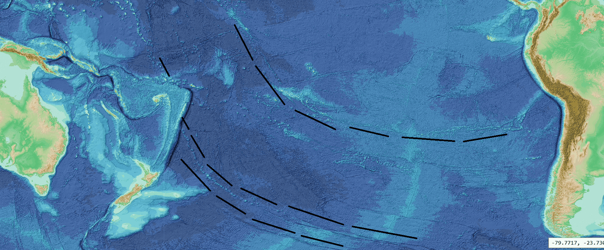
The phenomenon. The northern stripes converge west of the ridges toward the tip (B.6, C.1); the author’s drawing carries the same convergence to the central and southern lines (Figure C.4). The gap in knowledge. The convergence has been read on views of the globe, and only for the northern stripes; it has not been traced in the data for all three systems together, toward a target fixed in advance. The research question: traced in the data from their American ends westward, do the stripes of the north (Mendocino, Murray, Molokai, Clarion, Clipperton), the centre (Sala y Gomez–Easter–Tuamotu–Line Islands) and the south (the Eltanin system with the Louisville chain; the Tuvalu–Gilbert–Ratak chain) lead to the tip of the pear?
The lines used here have long been mapped on charts of the ocean floor and are named after nearby places and features; as in the rest of this paper, the names are used only as names of places on the map. The data are the GEBCO 2026 grid (GEBCO Compilation Group 2026), the global compilation of the depth of the ocean floor, issued each year from ship soundings and satellite gravity. Lit from one side — a “hillshade” — the grid shows lines on the floor as bands of light and shadow, much as a low sun shows the furrows of a field. What is new here: the lines of the three systems are followed together, by one rule written down before the tracing, to two targets taken from this paper.
Followed westward, the stripes of the north, the centre and the south lead to the tip of the pear: their westward continuations pass within the final contact, 3,000 km across, or at least within the whole tip, the 6,000-km contact; and lines chosen without regard to the tip do not reach the final contact.
Type of research: quantitative, on a global grid, with the rule fixed in writing before any line was traced (18 October 2026). The targets. The final contact, on which the Moon sat at release: centre 8.7°N 167.7°E, 190 km from the centre of the bends (C.1), radius 1,500 km (half of 3,000 km). The tip of the pear, the 6,000-km contact before the narrowing: centre about 6°N 179.5°W, 250 km from the mirrored contact centre of C.3, radius 3,000 km. The data: the GEBCO 2026 hillshade in three sections — north (0–45°N, 180–100°W), south (0–65°S, 180–70°W) and the region of the tip (45°S–25°N, 150–180°E) — joined into one map at 30 points per degree. The tracing. Each line is followed from its American end westward in steps of 0.5°. At every step a fan of short trial lines, 2–2.5° long, turned by up to 10° and moved sideways by 0.2–0.4°, is laid ahead of the last point — a directional filter — and the step goes to the trial line along which the floor shows the sharpest edge across it. The sharpness is a ratio: the steepest change across the line divided by the typical change around it. A step is continuous if the ratio is at least 4.5, weak between 4.0 and 4.5, and bridged below 4.0; at random places and headings 95 of 100 ratios fall below 4.2, and a random line 10° long has a median of 10% supported steps (90 in 100 below 35%). Where a line bends or a chain turns, the route was guided by points chosen by eye on enlarged views, and every bend was checked by eye; the positions still snap to the data, and the share of supported steps comes from the data alone. The extension. A great circle — the shortest path on the sphere, the line a straight course follows on the globe — is fitted to the last third of the data-supported path and extended west for up to 12,000 km; its closest approach to each centre is recorded. The verdict, fixed in advance: final contact if the extension passes within 1,500 km of its centre; otherwise tip region if within 3,000 km of the tip centre; otherwise misses. Every traced line is reported; none was removed afterwards. The references: three lines that the author had not drawn as routes to the tip — Pioneer in the north, Galapagos and Marquesas in the centre — traced by the same rule. Sensitivity: the fit repeated on the last quarter and the last half of each path.
The study began with straight lines through two points of each stripe. The author’s drawing of the southern lines bending north near Tonga–Kermadec showed that the lines of the south are curved and must be followed along their own course; the study was therefore carried out by tracing, under the same targets and verdicts. In the data the routes are these. The north: each stripe is followed from the coast of North America west to 154–174°W, where it reaches the Hawaiian ridge, the Line Islands, or Johnston and the Mid-Pacific Mountains. The centre: Sala y Gomez–Easter (66% of steps supported), west of the East Pacific Rise to Gambier (60%), the Tuamotu (78%), and the Line Islands, continuous by eye to Johnston (169.5°W 16.7°N); a western branch leaves the Line Islands at 11°N. The south, upper path: the northern strand of the Eltanin system (77%), a step of about 150 km to the Louisville chain (67%), which runs north-north-west to the Kermadec trench at 175°W 26°S, where it ends; beyond Tonga and Fiji the Tuvalu–Gilbert–Ratak chain (74%) runs north-west into the final contact, to 167.9°E 10.7°N — the chain that D.1 reads as the western spatula ridges. The south, lower path: the southern strand of the Eltanin system (64%). The supported shares of 60–78% stand far above the 10% of a random line. Figure C.5 shows every path, and the table in Step 6 gives the measurements.
The table gives, for every path, where the data last support it and in which direction it then runs, how far it had to be extended, and how close its extension comes to the two centres. The rows are ordered by the distance to the final contact; the colour of that column passes from green, inside the final contact, to orange, outside it.
How to read the table below: go down the fifth column. Six of the ten paths pass within 1,500 km of the centre of the final contact, five of them within 450 km: the southern upper path at 166 km, the Tuvalu–Gilbert–Ratak chain, which runs into the final contact, at 190 km, Clarion at 288 km, the southern lower path at 300 km, Molokai at 434 km; Murray at 1,274 km. Clipperton misses the final contact by 14 km. All ten paths reach the tip region, within 3,000 km of its centre; the central path does so at 1,340–1,601 km. Of the three reference stripes, none comes within 1,500 km of the final contact (1,656–2,590 km). Fitted on the last quarter or the last half of each path instead of the last third, each of the six keeps its verdict (62–1,274 km).
A test of chance. Great circles were started at random places in the Pacific with the headings of the stripes (240–300° in the north, 290–340° in the south) and extended as the paths were. They reach the final contact in 44–55 of 100 trials and the tip circle in 80–88; with any westward heading, in 25 and 54.
| System | Path | Last reliable point, heading | Extended (km) | To final contact (km) | To tip centre (km) | Verdict |
|---|---|---|---|---|---|---|
| South | Upper: Eltanin (northern strand) + Louisville | 174.6°W 26.8°S, NNW (335°) | 4,380 | 166 | 1,025 | final contact |
| South | Upper, beyond Fiji: Tuvalu–Gilbert–Ratak (traced, not extended) | 167.9°E 10.7°N, NW (319°) | 0 | 190 | 851 | final contact |
| North | Clarion | 154.3°W 13.8°N, W (270°) | 4,170 | 288 | 760 | final contact |
| South | Lower: Eltanin (southern strand) | 154.2°W 52.5°S, NW (325°) | 7,690 | 300 | 928 | final contact |
| North | Molokai | 169.7°W 18.9°N, WSW (257°) | 2,660 | 434 | 1,147 | final contact |
| North | Murray | 168.6°W 27.0°N, W (260°) | 2,980 | 1,274 | 2,004 | final contact |
| North | Clipperton | 165.7°W 0.1°S, WSW (258°) | 2,720 | 1,514 | 944 | tip region |
| North | Mendocino | 169.1°W 36.8°N, WSW (253°) | 3,480 | 1,826 | 2,770 | tip region |
| Centre | Western branch at 11°N | 171.6°W 11.2°N, NW (318°) | short | 2,094 | 1,340 | tip region |
| Centre | Sala y Gomez–Easter–Tuamotu–Line Islands, to Johnston | 169.7°W 16.4°N, NW (323°) | short | 2,441 | 1,601 | tip region |
| Reference stripes (not drawn by the author as routes to the tip) | ||||||
| North | Pioneer | 173.4°W 32.8°N, WSW (251°) | 2,910 | 1,656 | 2,563 | tip region |
| Centre | Galapagos | 150.9°W 5.8°S, W (260°) | 4,420 | 2,205 | 1,769 | tip region |
| Centre | Marquesas | 155.3°W 14.7°S, W (265°) | 4,220 | 2,590 | 2,381 | tip region |
Distances are the closest approach of the great-circle extension of the last third of each path (for the Tuvalu–Gilbert–Ratak chain, of the traced path itself) to the centre of the final contact (8.7°N 167.7°E) and to the centre of the tip (6°N 179.5°W). Heading: the direction of the path at its last reliable point, in degrees clockwise from north. Green: within the final contact, deeper the closer; orange: outside it, deeper the farther. Data: GEBCO 2026.
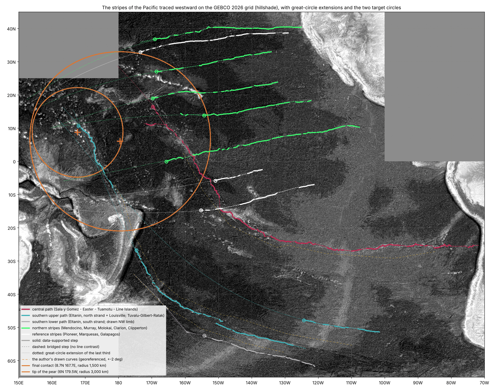
Result. The hypothesis is supported. Traced in the data from America westward, the stripes of the north, the centre and the south of the Pacific lead to the tip of the pear: all ten paths reach the tip region, six of them pass within 1,500 km of the centre of the final contact, and none of the three reference stripes does. The two southern paths, which begin in the far south-east of the Pacific, run north-west and bend north near Tonga–Kermadec, and their continuations pass 166 and 300 km from the centre of the final contact; the Tuvalu–Gilbert–Ratak chain itself runs into it.
The reading in the model. We propose that the stripes of the north, the centre and the south are traces of the pear’s flow converging on its tip. The leading wall of the pear stood across the whole width of its base, 9,000–11,000 km, north and south of Kiritimati (B.4); as the pear was gathered back, the wall was gathered around the tip (B.6), and its lines were laid on the floor converging on the place where the tip came down. The southern stripes run north-west, bend north near Tonga–Kermadec and continue toward the tip; the central line turns north-west along the Tuamotu and the Line Islands; the northern stripes run west toward it from America. The central and southern routes end on the two chains that Part D reads as the spatula ridges within the tip — the Line Islands in the east and the Tuvalu–Gilbert–Ratak chain in the west.
Limitations. Several hits rest on extension across ground where no line is visible: 2,660 km for Molokai to 7,690 km for the southern lower path. The southern upper path reaches the Tuvalu–Gilbert–Ratak chain only across a bridge of about 1,800 km over Tonga and Fiji, from the end of the Louisville chain (175°W 26°S) to the southern end of the chain (179°E 10°S). The north-west limb drawn for the southern lower curve, from 160°W 51°S to the Kermadec trench at 175°W 34°S, was not found in the data (4% of steps supported, the random level); that path rests on the southern strand of the Eltanin system alone. The northern stripes end as visible lines at 154–174°W, heading west to west-south-west, rather than visibly bending into the final contact; they reach it by extension, and north of 25°N west of 180° the sections used have no data. The central line is not continuous between the coast of South America and 82°W. Great circles running west across the Pacific tend to converge on the western equatorial Pacific: in the test of chance the final contact is reached in about half of the trials and the 3,000-km tip circle in most. The decisive measure is therefore the final-contact circle, and the contrast with the reference stripes. Directions for further research. A full digitisation of the stripes of the Pacific and a formal test against a model of chance (Study 10, Part G).
Traced on the GEBCO 2026 grid from their American ends, the stripes of the north, the centre and the south of the Pacific all lead to the tip of the pear: six of the ten traced paths pass within 1,500 km of the centre of the final contact (166–1,274 km), and none of the three reference stripes does.
What we now have. West of the base the stripes turn toward a region 3,360 km wide, between the 3,000-km contact and the 3,650-km dome (C.1). The region lies about 3,760 km west of the base, on the trailing side, its southern edge on the same equator as the base (C.2). Inside it lies a mirror image of the near side at the size of the Moon on the tip, with Serenitatis, Imbrium and the contact centre within the footprint (C.3). The stripe system, from the tip to America, is as long as the pear’s own body with its tip region, to within 5% (C.4). And the stripes of the whole Pacific — north, centre and south — traced in the data, lead to that same tip (C.5).
The spatula ridges
Parts B and C read the stripes and the place of the tip. This part turns to the large chains of volcanic ridges that stand within that place, in the peeled part of the tip. The question it answers is whether these chains can be read as a mark left in the contact region of the tip while the Moon was peeled away and pulled outward with force, and which observations already bear on that reading.
D.1The ridges on either side
West and east of the maria imprints (C.3) stand the large ridge chains of the central Pacific: the Marshall–Gilbert–Tuvalu chains in the west (with the Mid-Pacific Mountains and Wake farther north-west) and the Line Islands in the east, with Palmyra and Kiritimati. We read them as the spatula ridges: ridges drawn up from above in the contact region at the tip of the pear, on which the Moon sat and from which it was peeled and pulled off with force (Paper 3). They lie within the tip of the pear itself, in its peeled part. The contact narrowed from 6,000 km to the 3,000 km on which the Moon sat in its last stage (Paper 3), and the narrowing was a peeling: the band of the contact that was peeled between the 6,000 and the 3,000 km is itself the tip of the pear, and the ridges were drawn up in that band. The material of the contact was still soft; as the Moon was pulled away, this material was drawn up between the Moon and the tip, as the plaster between a spatula and a wall is drawn into ridges when the spatula is pulled off while the plaster is still soft (Figure D.1). The ridges stayed on the face of the tip, in its peeled band. As the pear was gathered back, the tip region came down to the floor of the Pacific, west of the base (C.2), and the ridges came down with it.
The everyday picture is that of a plasterer. Press a flat spatula onto a wall covered with fresh, soft plaster and pull it straight off: the plaster clings to both the spatula and the wall, is stretched between them as the gap opens, and is left standing in raised ridges, highest along the edges of the spatula, where the plaster is the last to let go. Nothing pushed these ridges up from inside the wall; they were pulled up from the outside, as the spatula was drawn away. In the model the tool is the Moon, the wall is the tip of the pear over its contact, narrowing from 6,000 to 3,000 km, and the soft plaster is the material of the contact, which was still soft — it flowed slowly, like thick honey, rather than breaking — when the Moon was peeled and pulled off. The pull was not gentle: the Moon was released only when a little more than half of it had crossed the corotation line, pulled outward with force (A.2), and it is this pull that drew the ridges up. A contact of this kind is one of the requirements of the paper (requirement 4 in the box at the start).
What happened with the Hawaiian–Emperor chain is not yet known. We propose, tentatively, that it too was part of the spatula; no requirement of the paper rests on it (D.3, F.3).
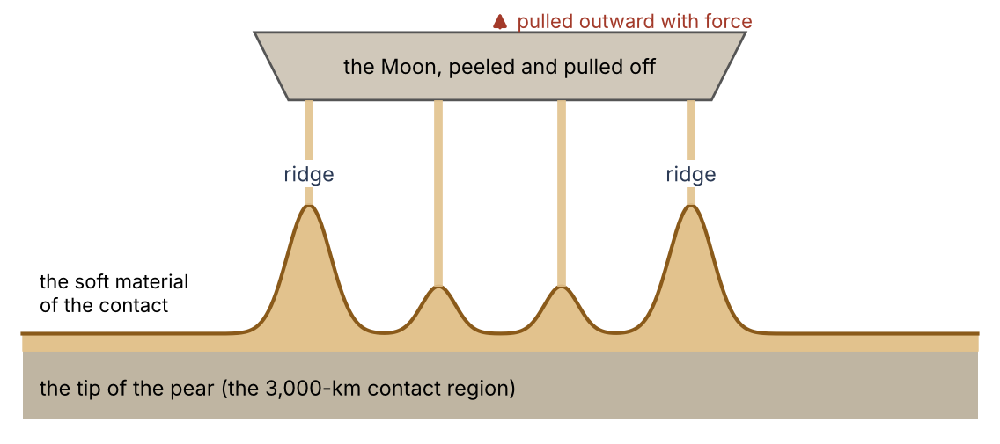
D.2Their spacing
If the chains were drawn up in the contact region of the tip, the span between them should be about the width of the contact. The two chains are 2,800–3,500 km apart (Majuro to Kiritimati 3,490 km; Tarawa to Palmyra 2,810 km; middle to middle 3,290 km): the width of the tip (3,360 km, measured between the two bends of the stripes in C.1) and of the contact (3,000 km, the width of the surface on which the Moon sat at release, Paper 3). The spread of 2,800–3,500 km comes from measuring between different pairs of islands; all of it lies within the range of the tip width found in C.1 (3,040–3,700 km).
The two chains do not sit symmetrically about the footprint of the tip found from the bends (C.1). The western chain passes through its centre (Kwajalein, in the Marshall Islands, lies 180 km from it); the eastern chain, the Line Islands, runs farther east and carries Kiritimati, at the centre of the base of the pear. This places the chains within the base, not apart from it: the base of the pear was 9,000–11,000 km wide (Paper 3), so the whole 3,000-km tip region, which came down about 3,760 km west of the centre of the base (C.2), lies within the width of the base, and so do both chains. The pair of chains has the width of the contact region, and it lies about half that width east of the footprint of the bends. This follows from where the ridges were drawn. The footprint of the bends marks the final 3,000-km contact, on which the Moon sat at release; the spatula ridges lie within the wider tip of the pear, in its peeled part — the band that was peeled as the contact narrowed from 6,000 to 3,000 km (D.1) — and so partly beyond the final contact, toward the base. The chains are therefore displaced from the footprint of the bends toward the base, by about half the width of the contact. The bends of the stripes and the two chains thus give two independent measurements of one width, the width of the contact region.
D.3Their ages
The ages of the volcanic material along a chain give a second test, and to read it two terms are needed.
A plume track. A plume is a column of hot material rising from deep in the Earth to a fixed spot beneath the floor. If the floor moves slowly over that spot, the plume erupts through it again and again at new places, and leaves a line of volcanoes — much as a candle held still beneath a sheet of paper that is drawn slowly across it leaves a line of scorch marks. The newest volcano stands over the plume; each older one has been carried farther away.
An age progression. A plume track therefore shows a steady change of age along its length: the farther a volcano lies from the active end, the older it is, in an orderly sequence. This steady change is called an age progression.
The spatula ridges were not drawn up in one moment: they were drawn during the peeling of the Moon, over its whole duration — millions of years (Paper 3). Their ages should therefore be spread over the period of the peeling, not concentrated in one instant. Nor should they follow the steady progression of a plume track: nothing in the picture is a fixed source beneath a moving floor, leaving volcanoes that grow older step by step along the chain. A chain drawn up in this way may show a few episodes, each found at once over great distances, or a long span of ages with no simple order along it, but not a clean sequence from one end to the other. What is compared here is therefore not the value of the ages but their pattern along the chain. The published ages are given in the table below. Ages are in Ma, mega-annum: millions of years before the present (81 Ma means 81 million years ago).
| Chain | Ages | Reading in the literature |
|---|---|---|
| Line Islands | Two episodes, 81–86 and 68–73 Ma, each synchronous over 1,200 to more than 4,000 km; no age progression | “Incompatible with single or multiple hot spot models”; lithospheric extension (Davis et al. 2002); multiple melt sources (Pockalny et al. 2021) |
| Marshall Islands | 66–140 Ma; no simple progression; some seamounts with several episodes | Short-lived, discontinuous volcanism (Koppers et al. 2003) |
| Hawaii–Emperor | A clean progression, 0 to about 81 Ma | A plume beneath a moving plate |
How to read the table: the middle column gives the pattern of the ages along each chain; the right column gives how the published studies themselves interpret that pattern. “Synchronous” means of the same age: in the Line Islands each episode is found at once along 1,200 to more than 4,000 km of the chain. A “hot spot” is the surface end of a plume; “lithospheric extension” is a stretching of the Earth’s outer rigid shell.
The table should be read row by row. The Line and Marshall chains do not behave as plume tracks: the Line Islands erupted in two episodes, each at once over thousands of kilometres, and the Marshall Islands erupted over a long span with no simple order along the chain. Science itself explains the Line Islands by extension of the plate — a pulling, not a push from below. This is the same kind of cause the spatula picture proposes: a chain made by drawing the floor apart, not by a source rising beneath it. The Hawaiian–Emperor chain does show a progression, from 0 Ma at Hawaii to about 81 Ma at the far end of the Emperor chain. We propose, tentatively, that it too was part of the spatula; its ages are taken up in F.3.
D.4The comparison to come
The ages are one test. To show that the chains were drawn up from above and not pushed up from below, they will be compared with ridges outside the Pacific that the literature reads as built from below — the Ninetyeast Ridge (Kerguelen; a single continuous rise 5,000 km long, ages 77 Ma in the north to 43 Ma in the south), the Walvis Ridge (Tristan–Gough) and the Chagos–Laccadive Ridge (Réunion) — in their ages, shape, flexural moat, crustal root and orientation (Part G). These three ridges serve as the reference: if the Pacific chains are built differently, the difference should show in the same five measures.
Two of these measures need a word of explanation.
Flexural moat. A large volcanic ridge is a heavy load standing on the floor. The outer shell of the Earth bends under such a load, as a board floating on water bends down where a weight is placed on it. Around the ridge the floor is pressed down into a trough, which slowly fills with sediment: this trough is the flexural moat. Its depth and width tell how heavy the load is and how stiff the shell was when the load was placed on it. The floor around Hawaii is the classic measured case (Watts & ten Brink 1989).
Crustal root. Beneath many large ridges the crust is thicker than in the surrounding floor: the ridge has a keel reaching downward, as an iceberg has most of its body below the water line. This thickened crust beneath the ridge is its root. A ridge built from below by melt rising through the shell is expected to be underlain by such a root.
The comparison asks whether the Pacific chains have the moats and roots of ridges built from below, or whether they differ from them in a way that a ridge drawn up from the surface would. The values are to be measured in Study 7; the comparison has not yet been made.
What we now have: two chains of ridges spaced as the contact region was wide, one passing through the centre of the tip and one past Kiritimati, both within the width of the base, and displaced about half a width from the footprint of the bends toward the base, within the tip itself, in the band that was peeled as the contact narrowed from 6,000 to 3,000 km; two of the three chains without the age progression of a plume track; and a set of measures by which a ridge drawn up from above can be told from one built from below.
The equator of then
Parts A and B used the fact that the stripes are parallels of one equator. This part shows how that equator is found, how far it is tilted to today’s equator, and what the tilt means: the stripes record the equator of the Earth at the time the pear was gathered back, which need not be today’s.
E.1 The stripes are tilted to today’s equator
Every stripe measured rises northward toward the east, the southern stripe included: the stripes are not parallel to today’s equator. If they were, each would keep one latitude along its whole length; instead each lies farther north at its eastern end than at its western end.
The angle was measured directly on the globe, between points the author marked along each stripe. For two points the measurement is simple: the rise is the difference in latitude between the eastern and the western point, the run is the east–west distance between them (the difference in longitude, shortened by the cosine of the latitude, because the meridians draw together toward the pole), and the angle is the slope of the rise over the run. For example, the two Murray points lie 4.04° apart in latitude and 20.95° apart in longitude; at about 31° of latitude that is a run of about 18 degrees of arc, and the slope is 12.7°. Where more than two points were marked (Clarion, Clipperton), the angle is that of the straight line through all of them.
| Stripe | Points marked (east to west) | Angle |
|---|---|---|
| Mendocino | 39.84°N 129.66°W; 39.48°N 140.90°W | +2.4° |
| Murray | 33.12°N 134.36°W; 29.08°N 155.31°W | +12.7° |
| Clarion | 19.44°N 110.26°W … 14.21°N 145.97°W (4 points) | +9.0° |
| Clipperton | 10.16°N 112.86°W … 3.0°N 150°W (3 points) | +11.0° |
| Southern | 10.23°S 132.24°W; 12.63°S 144.09°W | +11.7° |
Angle: to today’s parallels, positive rising toward the east. The colour of the angle cell shows its size: the deeper the orange, the larger the angle. All five angles are positive: every stripe rises toward the east.
How to read the table: go down the right-hand column. Four of the five stripes — Murray, Clarion, Clipperton and the southern stripe — are tilted by 9.0° to 12.7°, and they lie both north and south of the base; Mendocino, the northernmost stripe, measured over the shortest run, is the least tilted (2.4°) but rises toward the east as well. No stripe is level and none falls toward the east. The stripes share one sense of tilt, and most of them share its size.
E.2One equator, inclined by at least 10°
Tilted lines of this kind are what the parallels of a tilted equator look like on today’s map. An equator inclined to today’s equator crosses it at two opposite points; a line parallel to it rises above today’s latitudes on one side of the crossing and falls below them on the other. Near the crossing such a line rises at about the angle of the tilt; farther from the crossing it rises more gently, and a quarter of the way round the globe it runs level for a while before turning down.
Fitted together, the stripes are parallels of one equator inclined to today’s equator by at least 10°; below that the fit fails. The reason is the steepness of the stripes that lie close to the equator of the system: a line near a tilted equator rises at most at about the angle of the tilt, so an equator inclined by less than 10° cannot produce stripes such as Clipperton (+11.0°) and the southern stripe (+11.7°).
Above it, inclinations up to about 20° fit almost equally well, because the points span only some 55° of longitude — about one seventh of the way round the globe. Over so short a piece, a gently tilted equator seen close to its crossing and a more steeply tilted one seen farther from its crossing draw nearly the same lines; the two can only be told apart by following the stripes over a longer arc. This is why the measurements fix a lower limit but not the value above it. The exact inclination depends on whether the westernmost points, beyond the ridges where the stripes bend (B.6), still belong to the straight stripes: west of the ridges the stripes converge, and parallels of one equator do not converge, so including those points or leaving them out changes the fit.
At 10°–14° the base of the pear lies on the equator of the system (the fit of 11°, places the crossing with today’s equator at 159°W, 1.5° of longitude from the base, and the base 1.6° from the equator of the system). This matters because it ties the stripes to the pear: the pear rose from the equator of its time (B.2), and its base sits on the equator that the stripes define. The exact inclination is left to Study 1, which refits the equator on traces of the full stripes and gives its errors.
E.3 The equator at the time the pear was gathered back
Why should the equator of the stripes differ from today’s? The answer lies in when the stripes were made. The stripes were not laid down while the pear stood, but as it was gathered back, after the release. Until then a mass of seven to twelve lunar masses stood high above the surface on one side of the Earth, near the equator. When the Moon was detached and the pressure inside the pear was released, the pear was gathered back into the Earth and absorbed into it — its heavy part down to the base of the mantle beneath the base (B.7) — and the absorption left the wrinkles: the stripes on the leading side, the crumpled arcs on the back (B.8).
The mass did not leave the Earth; it moved from high outside to deep inside, and the distribution of mass about the axis of rotation changed with it. A spinning body is balanced when its mass is arranged in a certain way about its axis; the quantity that measures this arrangement is the moment of inertia, which grows with the amount of mass and with its distance from the axis. Moving a large mass from far outside the surface to deep within the body changes that arrangement, and the balance with it. The everyday picture is a spinning ball with a heavy lump of putty stuck high on one side of it: the ball spins steadily with the lump on its equator. Press the lump deep into the ball and that balance is lost; the ball slowly rolls over, relative to its spin, until it finds a new one. In the same way, the Earth could then begin to turn toward a new orientation.
The stripes therefore record the equator at the time the pear was gathered back, and perhaps the beginning of that turn. An inclination of at least 10° between the equator of the stripes and today’s equator is what such a turn would leave behind. The series does not enter the study of the axes — how far the Earth turned, how fast, and about which line; it is left for future work.
Challenges
A specialist reader will raise three objections to the reading of Parts A–E. This part states each of them and what the model answers and requires. The first concerns the age of the floor on which the stripes lie, the second the order of stripes and ridges, the third the ages of the Hawaiian chain.
F.1The age of the sea floor
The objection. The floor between the stripes is dated by its magnetic anomalies and by its basalts to at most about 180 million years, far younger than the separation of the Moon. (Magnetic anomalies are bands of the floor magnetised in one direction or the other, recording the Earth’s field at the time the material cooled; basalts are the dark volcanic material of which the floor is made, dated by its radioactive clocks.) A stripe made when the Moon left cannot lie in a floor that formed long after.
The answer. In the model the floor is young because it has gathered layers: a new layer is laid on top while the layer beneath is taken back and renewed from below. What is dated is the material that lies on the stripes now — the last layer — not the stripes. A floor renewed in this way cannot be dated as a whole, and the age of its present surface is not the age of the stripes.
The everyday picture is snow on a ploughed field. The snow fell last night; the furrows were ploughed months ago. Under a light snowfall the furrows still show through as long, faint lines, because the snow lies over the old relief and follows its shape. Dating the snow gives the date of the snowfall, not of the ploughing. In the same way, a layer laid over an older fold takes on the shape of the fold, and dating the layer gives the age of the layer, not of the fold beneath it. The stripes themselves may be billions of years old: worn and partly erased over that time, and seen today as remnants beneath new material.
What the maps show. On the topography of the floor the stripes are faint; on the gravity gradient they stand out sharply (Figures A.1, B.4, B.5). The two maps see different things. Topography is the shape of the surface only: where new layers have smoothed an older relief, the surface shows it faintly. The gravity of a place depends on all the mass beneath it, and the gravity gradient — the rate at which gravity changes from point to point — picks out sharp changes of density at depth as well as at the surface. A fold of denser material beneath lighter, younger layers changes the gravity above it even where it hardly changes the shape of the surface. Gravity sees the density contrasts beneath the surface, topography only the surface: the stripes are clearer where the map sees below the new material, as remnants beneath it would be. The global gravity model of the floor was itself described as revealing “buried tectonic structure” (Sandwell et al. 2014).
What this requires. The stripes must be a structure of the layer beneath the dated surface — a fold that the new layers have draped rather than created. Where a stripe is crossed by drilling or by seismic profiles (sections of the floor made by sending sound waves down and recording their echoes from the layers below), the fold should continue below the youngest layers, and the layers above it should be thinner over its crests and thicker in its troughs, as material laid down over an older relief. This is tested by Study 9.
F.2The order of stripes and ridges
The objection. If the stripes pass beneath the ridges (B.5), the stripes might seem to be older than the ridges, or the ridges older than the stripes; the observation must be read with care. That the stripes pass beneath the ridges does not by itself fix which came first: the ridges may have stood on the surface while the folding formed beneath them. A fold made from the sides and from below (Figure B.3) can pass under a ridge that already stands, as a rug can be wrinkled beneath a table standing on it.
The test. The test is whether the ridges are shortened where the stripes pass beneath them. If a fold formed under a standing ridge, the ground under the ridge was drawn together, and the ridge above it should show it — shortened, crowded or bent where the fold passes. If the ridge is untouched where a fold must have passed beneath it, the ridge came later. This is Study 6, to be measured on a flat map without vertical exaggeration.
F.3The Hawaiian age progression
The objection. The Hawaiian–Emperor chain has the clean age progression of a plume track (D.3), from 0 Ma at Hawaii to about 81 Ma at the far end of the Emperor chain, which the spatula ridges are not expected to show.
The answer. The reading of this paper does not rest on this chain. What happened with it is not yet known; we propose, tentatively, that it too was part of the spatula, and the paper sets no requirement on it. The reading rests on the Line and Marshall chains, whose ages show no plume progression (D.3). The Hawaiian–Emperor chain is set beside them, and beside the ridges built from below, in Study 7.
Predictions, tests and the studies to come
This part collects the tests of the paper in one table. Each row is a study still to be run — Study 10 has had its first run (C.5), and its row gives the next step: the middle column says what is to be measured, the right column says what result would support the reading of the stripes as the leading side of the pear. The studies follow the order of the paper: the equator (Part E), the arrangement of the stripes about the base (Part B), the ridges (Parts B and D), the mirror imprint (Part C), the age of the floor (Part F) and the stripes of the whole Pacific (Part C).
| # | Study | Result that supports the reading |
|---|---|---|
| 1 | The equator of the stripes refitted on our own traces of the full stripes: inclination, crossing, errors | One common equator, passing through the base |
| 2 | A test of chance: how often a random point falls within 2° of the equator of the system | A position so close to the equator is rare for a random point |
| 3 | One side only: do the stripes start at the base and run east; what lies west of it | Stripes that begin at the base and run east; bending, converging and crumpling to the west |
| 4 | Steps in depth and age across each stripe: do they grow toward the base or away from it | Steps ordered about the base |
| 5 | The trailing side: east–west asymmetry of the Pacific about the base | Parallel stripes to the east, crumpled arcs to the west |
| 6 | Continuity beneath the ridges: does each stripe continue on the same circle on both sides; is the ridge shortened above it (flat map, no exaggeration; cursor coordinates) | Each stripe on the same circle on both sides of a ridge; the ridge shortened above it |
| 7 | The spatula ridges against ridges built from below outside the Pacific (Ninetyeast, Walvis, Chagos–Laccadive): ages, shape, moat, root, orientation | Spatula ridges built differently from plume tracks |
| 8 | The mirror imprint: mark the features at the mirrored places of Serenitatis, Nectaris and the contact centre, and the other near-side maria at the scale 1.37 | Circular features at the predicted places |
| 9 | The stripes beneath the dated layers: seismic profiles and drill holes across the stripes — does the fold continue below the youngest layers, are the layers thinner over its crests | The fold continuing below the youngest layers, with layers thinner over its crests |
| 10 | The stripes of the whole Pacific to the tip (first run in C.5): a full digitisation of the stripes of the north, the centre and the south, and a formal test against a model of chance | The paths of the stripes reaching the final contact more often than random lines with the same headings, and more often than lines not drawn toward the tip |
What each study would show.
Study 1 would fix the tilt of the equator of the stripes, now known only as at least 10° and up to about 20° (E.2), and the place where it crosses today’s equator, with their errors. It shows whether the stripes truly share one equator, and whether the base of the pear lies on it at the fitted tilt.
Study 2 would show whether the base on the equator means anything. Any point has some chance of lying close to a given line; the study measures how often a point placed at random in the region falls within 2° of the equator of the system. If that is rare, the position of the base at 1.6° is a meaningful agreement; if it is common, it is not.
Study 3 would show that the stripes belong to one side of the base: that they begin in the base region and run east, the leading side, and that what lies west of it is the bending and converging of B.6 and the crumpled back of B.8, not the same stripes continuing.
Study 4 would show whether the floor across each stripe changes in steps — in depth and in age — and whether those steps are ordered about the base, growing toward it or away from it. An order about the base would tie each stripe, one by one, to the pear.
Study 5 would show whether the Pacific differs east and west of the base: the parallel stripes of the leading side against the crumpled arcs of the trailing side (B.3, B.8).
Study 6 would show, on a flat map without vertical exaggeration and with positions read from the cursor, whether each stripe continues on the same circle on both sides of a ridge, and whether the ridge above it is shortened. It turns the first reading of B.5–B.6 into a measurement, and gives the order of stripes and ridges (F.2).
Study 7 would show whether the spatula ridges are built differently from ridges that the literature reads as built from below: the five measures of D.4 — ages, shape, moat, root and orientation — set side by side. It also sets the Hawaiian–Emperor chain beside them, to see whether it belongs with the spatula ridges (F.3).
Study 8 would show whether the mirror imprint of C.3 is on the floor: whether circular features are found at the places the mirror predicts for Serenitatis, Nectaris and the contact centre, and for the other near-side maria, at the scale 1.37 — the enlargement of the Moon’s surface when it sat on the tip.
Study 9 would show whether the stripes are an older fold beneath the dated surface (F.1): whether the fold continues below the youngest layers in seismic profiles and drill holes, and whether the layers above it are thinner over its crests and thicker in its troughs.
Study 10 would turn the first run of C.5 into a full measurement: every stripe of the Pacific digitised along its whole course, and the share of paths reaching the final contact set against random lines started at the same places with the same headings. It shows whether the convergence of the north, the centre and the south on the tip stands above what westward lines on the Pacific give by chance.
Conclusions
The table below sums up the paper. Each row is one observation; the colour in the first column is a traffic light. How to read it: green means the observation has been measured and fits the reading of the paper; orange means it rests on a first reading, or on a comparison still to be made, and is to be tested by the studies of Part G. The right-hand column gives the value or the state of each observation and the section where it is set out.
| Light | Observation | Status |
|---|---|---|
| The base on the equator of the stripe system | 1.6° from it, next to Clipperton (1.8°), for an inclination of 10°–14° (E.2) | |
| The width of the tip | Measured: 3,360 km against the 3,000-km contact and the 3,650-km dome | |
| The length of the stripes | Measured: 9,360 km from the tip to the eastern end, against the pear’s own body, with its tip region, of 8,890–9,000 km (C.4) | |
| The near side on the Earth | Mirror image at 1.37 with Imbrium in place; Serenitatis and the contact centre inside the tip | |
| The stripes beneath the ridges | Observed at four crossings | |
| The stripes of the whole Pacific lead to the tip | Traced on GEBCO 2026: all ten paths of the north, centre and south reach the tip region; six pass within 1,500 km of the centre of the final contact (166–1,274 km); none of the three reference stripes does (C.5) | |
| The trailing side | Crumpled arcs west of the tip, at 8,100–10,300 km from the base (pear body 8,890–9,000) | |
| Convergence west of the ridges | First reading on oblique views | |
| The spatula ridges | Within the tip itself, in the band peeled as the contact narrowed from 6,000 to 3,000 km (D.2); Line and Marshall without plume age progression; Hawaii–Emperor, with one, tentatively part of the spatula; comparison to be made | |
| The age of the sea floor | The dated surface is the last layer; the stripes are an older fold beneath it (F.1) — to be tested in seismic profiles |
The six green rows are the geometry of the paper: the base of the pear lies on the equator of the stripes, the tip has the width of the contact, the stripes have the length of the pear’s own body, the near side of the Moon falls inside the tip as a mirror image, the stripes pass beneath the ridges unbroken, and the stripes of the whole Pacific, north, centre and south, lead to the tip. The four orange rows are the observations that wait on the studies of Part G: the back of the pear, the converging of the stripes west of the ridges, the nature of the ridge chains, and the stripes beneath the dated floor.
The stripes of the North Pacific are ordered about the base of the pear: it lies on their equator, they run east of it, and west of it they bend and converge toward a region of the width of the contact on which the Moon sat; traced in the data, the stripes of the centre and the south of the Pacific lead to the same region. Inside that region lies the mirror imprint of the near side at the scale of a Moon not yet contracted, and the chains of ridges are spaced as the contact region was wide and lie within the tip itself, in the band that was peeled as the contact narrowed, partly beyond the final contact toward the base. We read the stripes as the leading side of the pear, folded as it was gathered back, and the region of the bends as the place where the Moon was formed.
Restated as one picture: a pear of the Earth’s own material stood on the Pacific, its base near Kiritimati, its tip about 3,760 km to the west, lagging behind the Earth’s rotation, with the Moon on that tip. Its front, facing the rotation, was stretched. When the Moon was detached and the pressure was released, the pear was gathered back into the Earth: its leading wall was smeared along the floor eastward toward America, in the direction of the rotation, as the stripes, 9,360 km of them against a pear body of 8,890–9,000 km; its back crumpled into the arcs of the western Pacific; the Moon, peeled from the contact as it narrowed from 6,000 to 3,000 km and pulled off with force, drew up the ridge chains within the tip itself, in its peeled band, during the peeling, 2,800–3,500 km apart, and they came down to the floor with the tip as the pear was gathered back; and the face of the Moon left its mirror image on the floor at the scale 1.37. The stripes record the equator of that time, tilted by at least 10° to today’s. The studies of Part G will test it.
References
Cottaar, S. & Lekic, V. (2016). Morphology of seismically slow lower-mantle structures. Geophys. J. Int. 207, 1122–1136.
Davis, A.S., Gray, L.B., Clague, D.A. & Hein, J.R. (2002). The Line Islands revisited: new Ar/Ar geochronologic evidence for episodes of volcanism due to lithospheric extension. Geochem. Geophys. Geosyst. 3.
GEBCO Compilation Group (2026). GEBCO 2026 Grid. General Bathymetric Chart of the Oceans (IHO–IOC).
Koppers, A.A.P., Staudigel, H., Pringle, M.S. & Wijbrans, J.R. (2003). Short-lived and discontinuous intraplate volcanism in the South Pacific: hot spots or extensional volcanism? Geochem. Geophys. Geosyst. 4.
Pockalny, R., Barth, G., Eakins, B., Kelley, K.A. & Wertman, C. (2021). Multiple melt source origin of the Line Islands (Pacific Ocean). Geology 49, 1358–1362.
Sandwell, D.T., Müller, R.D., Smith, W.H.F., Garcia, E. & Francis, R. (2014). New global marine gravity model from CryoSat-2 and Jason-1 reveals buried tectonic structure. Science 346, 65–67.
Watts, A.B. & ten Brink, U.S. (1989). Crustal structure, flexure, and subsidence history of the Hawaiian Islands. J. Geophys. Res. 94, 10473–10500.
Duran, Z. Papers 3 and 8 of this series (2026).
Use of AI tools: The author used AI assistants (Claude, Anthropic; ChatGPT, OpenAI; Google’s AI search assistant) to write and run the computation scripts, to analyse the catalogues and maps, to prepare figures and tables, to discuss the scenarios, and for language editing and translation. The model and its conclusions are the author’s. The author checked the content and takes full responsibility for it.